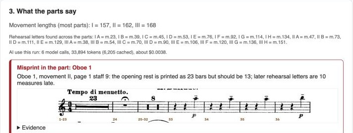
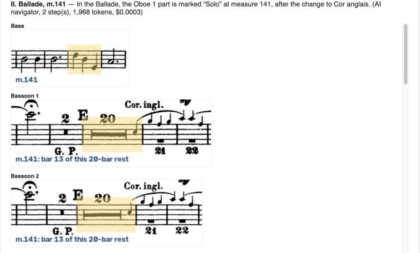

Measure Numbers
An AI rehearsal assistant: exact measure numbers on scanned orchestral parts, a whole-set check, cues before long rests, and "take me to that bar".
Michelle Chen · MGT 409 AI Foundations · Fall 2026
"From 98" — but which bar is 98?
- Old printed parts often have no measure numbers, only letters and "23" over a single bar of rest
- Librarians and players pencil in every number, by hand, in every part
- Off by one is worse than nothing; parts themselves contain misprints
- Long rests: players lose count without a cue
1,224 US orchestras (League of American Orchestras, 2014), most without a full-time librarian.

Oboe I: "23", a fermata, "8": which bar is the entrance? (The 23 is a misprint: the score has 13.)
What exists, and what is new
| Today | Problem |
|---|---|
| Pencil / librarian | Hours per set; misprints go unnoticed |
| Sibelius, Dorico, MuseScore | Only for re-typed music; new layout |
| OMR: Audiveris, ScanScore, PhotoScore | Must proofread; rhythm right in 32% of bars on our Violin I |
| forScore, Newzik | You still write every number |
| ChatGPT vision | Read "13" as "18" with 0.97 confidence |
- Numbers on the player's own pages, exact or a specific question
- Checks the whole set against itself: finds misreads and publisher misprints
- Cues and navigation drawn from the other parts
How the agents work
Code does the counting; each agent makes one decision with a few tools.
Code checks every tool call: e.g. a count may change only to a value the scan shows.
All four: gpt-6-luna, low effort.
Demo: the whole Karelia Suite in 2.5 minutes


29 parts87 pages
Set checker, 4 calls: Oboe I's Ballade is misprinted (23 bars of rest; the score has 13), not misread.
Navigator: "the cor anglais solo" → II, m.141, highlighted in every part, even mid-rest.
60 cues printed, 2–4 bars each.
Cues, printed into the part

Violin II: 4-bar Clarinet I cue under a 16-bar rest

Trumpet I: 3-bar viola cue
Oboe I: Violin I cue over the rests before the entrance
A violinist reviewed them: melodic lines only, none after fermatas, right before the entrance.
Cost to run
$0.0038
whole 29-part set, measured
6 calls · 33,894 tokens · 6,205 cached
$0.0003
a navigator question; $0 if parsed in code
| Users | Model | Total / month* |
|---|---|---|
| 1 | $0.03 | $0.12 |
| 100 | $3 | ~$42 |
| 10,000 | $300 | ~$1,700 |
Recognition compute costs more than the AI. Cuts: code first, agent only when needed; luna at low effort (medium: same answers, up to 1.9× cost); batching; prompt caching (68% cached in the set check); call caps.
*Usage and hosting are estimates; token costs measured.
Safety: the agent can't make a confident wrong number
PASS review: total-forcing change 14 -> 4
"4 is not supported by the evidence"
PASS set check: reading_error without evidence
PASS set check: staff that doesn't exist
PASS navigator: go_to a bar that doesn't exist
PASS navigator: injection in the request
PASS navigator: injection printed in a PDF
still II m.141 (3 of 3 runs)- Fixes only where the scan supports them; otherwise ask the player
- Navigator outputs only a validated bar; its text is never shown
- Key stays in
.env; no tool can read it - Call caps, timeouts, upload limits
Impact
916 / 916
staves numbered exactly, all 29 parts
(player-checked keys)
1
real publisher misprint found and confirmed
60 / 60
cues printed
Pilot timing, by hand vs. app: [results from this weekend]
First run on the 24 wind/brass/percussion parts: 9 of 52 movements exact; now all exact.
What's next
- Test on more music: other editions, composers, scored without changing rules
- Playback: hear a scanned part with other instruments on and off
- A friendlier, more playful interface
- Hosting with a queue for recognition and a per-user spending limit
Measure Numbers · Michelle Chen